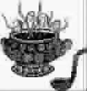

可盛的心
●马明博
在英语中，碗叫“bowl”；在古代，有一种陶制或者瓷制的容器，叫“钵”。“钵”与“bowl”，发音如此相似。再往深里想，“钵”、“bowl”、“抱”、“饱”，碗的空性，就是等待中的拥有，拥有之后的等待。
无情岁月，有情天地，碗固守着自己的质地，固守着自己的质性。它随缘而又超然，无论是在碗橱中、人们手中、各种各样的锅边；也无论拿着它的那双手是粗糙还是细腻，是男还是女，是孩子胖乎乎的小手还是老人青筋遍布沦桑的手；更无论要盛进来的是清汤还是浓粥，咸或者淡，青菜或者膏腴。
那时光也在这只碗里，你我也在这碗里面，生活这片天地也在这碗里面。这碗里面还盛容着一天天流水的日子、一天天的喜怒哀乐；盛容着使性子或者包容，自以为是的小伎俩或者恍然大悟的一瞬间，盛容着爱你或者恨你的人。碗里有情有世界。
一日，碰到商场里正在出售现代人刻意制的外形粗犷的碗，它很像寺院里僧人的钵，我一口气买了大、中、小三只。
这三只碗，形状各异。大的，口大，肚浅，大腹便便的样子；中的，碗口内收一些，有些苗条；小的，才像常用的碗，只是它小得可人可意，碗壁上，一凸一凸的绳纹，让人摸着舒服。
拿回家洗干净，分开放在案上。妻子看见了，说：“多像一家三口。”将小的放在中的里面，然后，中的抱着小的放在大的怀里，更像一家三口，夫抱着妻，妻拥着子。
看着这三只摞在一起的碗，感觉温暖、安详。
(潘博明摘自《作文与考试》2006年第20期)